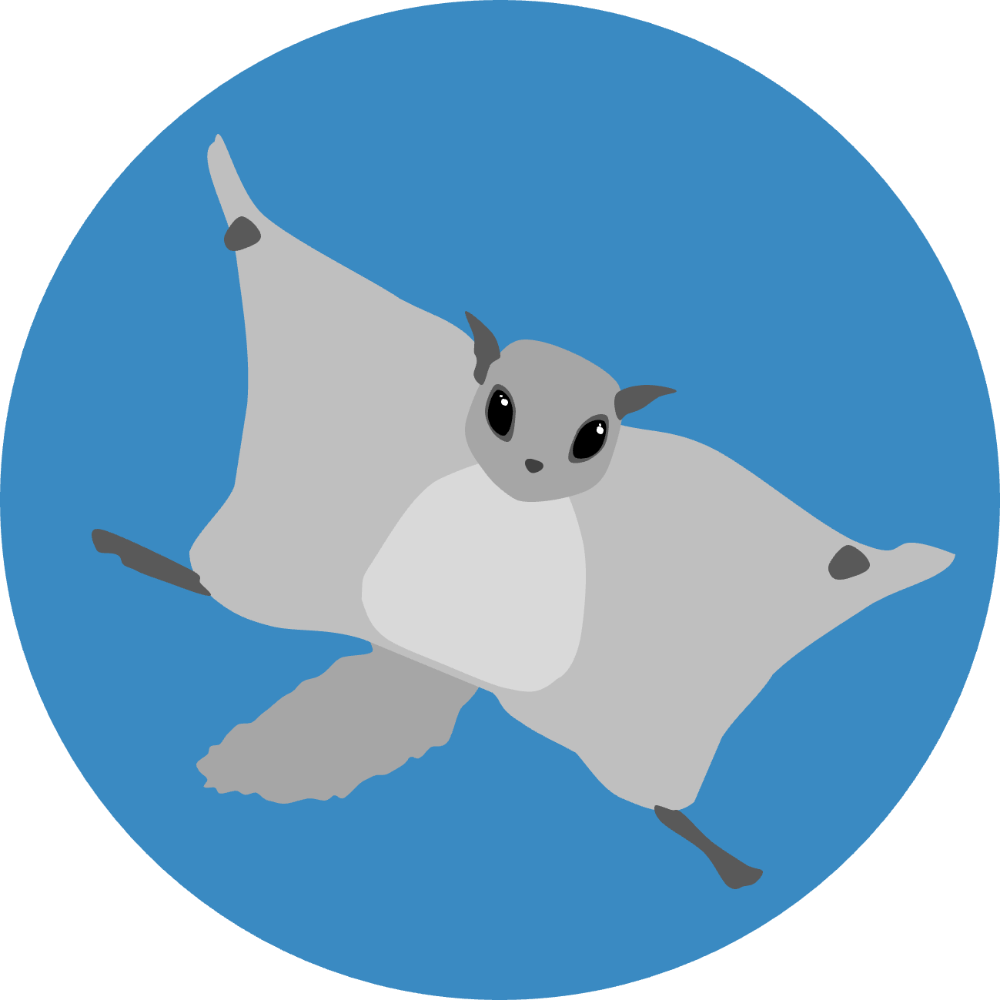
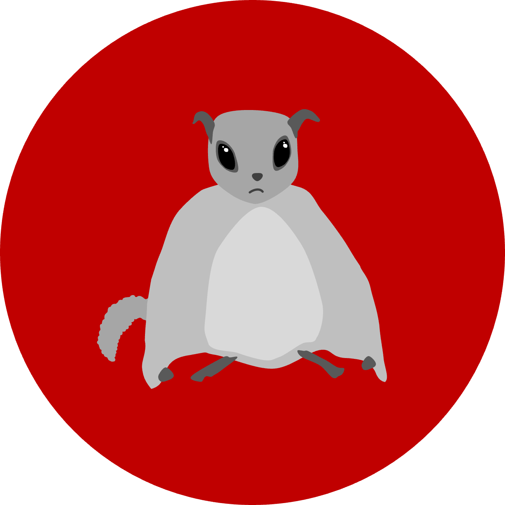
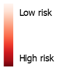
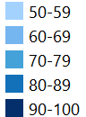

<!doctype html>
<html lang="en">
    <head>
        <meta charset="utf-8">
        <meta http-equiv="X-UA-Compatible" content="IE=edge">
        <meta name="viewport" content="initial-scale=1,user-scalable=no,maximum-scale=1,width=device-width">
        <meta name="mobile-web-app-capable" content="yes">
        <meta name="apple-mobile-web-app-capable" content="yes">
        <link rel="stylesheet" href="css/leaflet.css">
        <link rel="stylesheet" href="css/L.Control.Layers.Tree.css">
        <link rel="stylesheet" href="css/qgis2web.css">
        <link rel="stylesheet" href="css/fontawesome-all.min.css">
        <link rel="stylesheet" href="css/filter.css">
<link rel="stylesheet" href="css/nouislider.min.css">
        <link rel="stylesheet" href="css/leaflet-measure.css">
        <style>
        html, body, #map {
            width: 100%;
            height: 100%;
            padding: 0;
            margin: 0;
        }
        </style>
        <title></title>
    </head>
    <body>
        <div id="map">
        </div>
        <script src="js/qgis2web_expressions.js"></script>
        <script src="js/leaflet.js"></script>
        <script src="js/L.Control.Layers.Tree.min.js"></script>
        <script src="js/multi-style-layer.js"></script>
        <script src="js/leaflet.rotatedMarker.js"></script>
        <script src="js/leaflet.pattern.js"></script>
        <script src="js/leaflet-hash.js"></script>
        <script src="js/Autolinker.min.js"></script>
        <script src="js/rbush.min.js"></script>
        <script src="js/labelgun.min.js"></script>
        <script src="js/labels.js"></script>
        <script src="js/leaflet-measure.js"></script>
        <script src="js/tailDT.js"></script>
<script src="js/nouislider.min.js"></script>
<script src="js/wNumb.js"></script>
        <script src="data/openstand2018_2.js"></script>
        <script src="data/clearcutarea2020_3.js"></script>
        <script src="data/clearcutarea2022_4.js"></script>
        <script src="data/clearcutarea2024_5.js"></script>
        <script src="data/railway_6.js"></script>
        <script src="data/majorroad_7.js"></script>
        <script src="data/badexamplearea_9.js"></script>
        <script src="data/goodexamplearea_10.js"></script>
        <script>
		var map = L.map('map', {
            zoomControl:false, maxZoom:28, minZoom:2
        }).fitBounds([[60.015315670536005,20.786691699999903],[61.16964688925904,25.36505066512671]]);
		L.control.scale({ 
				position: 'bottomleft',  
				metric: true,            
				imperial: false        
		}).addTo(map);
		function zoomToFeature(e) {
			var layer = e.target; // Klikattu piste
			if (layer.getLatLng) {
			map.setView(layer.getLatLng(), 12); // Zoomaa pisteeseen, zoom-taso 14
			}
		}
		     var title = new L.Control({position: 'topleft'}); 
				title.onAdd = function (map) { 
				this._div = L.DomUtil.create('div', 'info'); 
				this.update(); 
				return this._div; 
			}; 
				title.update = function () { 
				this._div.innerHTML = '<h2>Suitable habitats of flying squirrel and risks</h2>'; 
			}; 

				title.addTo(map); 
				
			var abstract = new L.Control({'position':'bottomleft'}); 
            abstract.onAdd = function (map) { 
                this._div = L.DomUtil.create('div', 
                'leaflet-control abstract'); 
                this._div.id = 'abstract' 
                    this._div.setAttribute("onmouseenter", "abstract.show()"); 
                    this._div.setAttribute("onmouseleave", "abstract.hide()"); 
                    this.hide(); 
                    return this._div; 
                }; 
                abstract.hide = function () { 
                    this._div.classList.remove("abstractUncollapsed"); 
                    this._div.classList.add("abstract"); 
                    this._div.innerHTML = 'i' 	 
				} 

                abstract.show = function () { 
                    this._div.classList.remove("abstract"); 
                    this._div.classList.add("abstractUncollapsed"); 
                    this._div.innerHTML = '<h3>Description of the web map</h3>' + 
        '<p>The web map showcases the spatial distribution of suitable habitats for flying squirrels in Southwest Finland, along with potential human-related risks to these areas. The main human-related risk factors are habitat fragmentation and barriers caused by traffic and clear-felling.</p>' + 
        '<p>The main example areas include both “good” and “bad” areas. The good example areas are selected based on the extent of suitable habitats they contain, with minimal disturbance. The “bad” example areas are those heavily impacted by human-related risks.</p>' + 
        '<p>The risk level layer illustrates how much human-related risk factors have affected the area from 2018 to 2024. This analysis is based on an overlay of the risk factors and habitat data.</p>' + 
        '<p>The clear-cut area layers represent data from the years 2020, 2022, and 2024, showing the progression of clear-cutting activities. This can be explored using the slide control.</p>' + 
        '<p>The open stand layer highlights areas with canopy cover below 30%.</p>' + 
        '<p>The major roads layer includes all roads with more than two lanes, while the railway layer presents the railway network of the study area. Buffer zones are applied: 20 meters around major roads and 30 meters around railways, as per Finnish traffic safety regulations.</p>' + 
        '<p>The flying squirrel habitat layer quantifies habitat suitability, with values ranging from 50% to 100%.</p> '; 
		}; 

        abstract.addTo(map);
        var hash = new L.Hash(map);
        map.attributionControl.setPrefix('<a href="https://laji.fi/about/5922" target="_blank">Laji.fi CC BY 4.0</a> &middot;<a href="https://vayla.fi/vaylista/aineistot/avoindata" target="_blank">Suomen väylät CC BY 4.0</a> &middot;<a href="https://ckan.ymparisto.fi/dataset/%7B5B8976FE-334A-4216-92A5-1FC7670E7AFE%7D" target="_blank">Corine Land Cover CC BY 4.0</a> &middot;<a href="https://www.metsakeskus.fi/fi/avoin-metsa-ja-luontotieto/aineistot-paikkatieto-ohjelmille/paikkatietoaineistot" title="A JS library for interactive maps">Metsäkeskus CC BY 4.0</a> &middot;<a href="https://github.com/tomchadwin/qgis2web" target="_blank">qgis2web</a> &middot; <a href="https://leafletjs.com" title="A JS library for interactive maps">Leaflet</a> &middot; <a href="https://qgis.org">QGIS</a>');
        var autolinker = new Autolinker({truncate: {length: 30, location: 'smart'}});
        // remove popup's row if "visible-with-data"
        function removeEmptyRowsFromPopupContent(content, feature) {
         var tempDiv = document.createElement('div');
         tempDiv.innerHTML = content;
         var rows = tempDiv.querySelectorAll('tr');
         for (var i = 0; i < rows.length; i++) {
             var td = rows[i].querySelector('td.visible-with-data');
             var key = td ? td.id : '';
             if (td && td.classList.contains('visible-with-data') && feature.properties[key] == null) {
                 rows[i].parentNode.removeChild(rows[i]);
             }
         }
         return tempDiv.innerHTML;
        }
        // add class to format popup if it contains media
		function addClassToPopupIfMedia(content, popup) {
			var tempDiv = document.createElement('div');
			tempDiv.innerHTML = content;
			if (tempDiv.querySelector('td img')) {
				popup._contentNode.classList.add('media');
					// Delay to force the redraw
					setTimeout(function() {
						popup.update();
					}, 10);
			} else {
				popup._contentNode.classList.remove('media');
			}
		}
        var zoomControl = L.control.zoom({
            position: 'topleft'
        }).addTo(map);
        var measureControl = new L.Control.Measure({
            position: 'topleft',
            primaryLengthUnit: 'meters',
            secondaryLengthUnit: 'kilometers',
            primaryAreaUnit: 'sqmeters',
            secondaryAreaUnit: 'hectares'
        });
        measureControl.addTo(map);
        document.getElementsByClassName('leaflet-control-measure-toggle')[0].innerHTML = '';
        document.getElementsByClassName('leaflet-control-measure-toggle')[0].className += ' fas fa-ruler';
        var bounds_group = new L.featureGroup([]);
        function setBounds() {
        }
        map.createPane('pane_Basemap_0');
        map.getPane('pane_Basemap_0').style.zIndex = 400;
        var layer_Basemap_0 = L.tileLayer('http://services.arcgisonline.com/ArcGIS/rest/services/World_Topo_Map/MapServer/tile/{z}/{y}/{x}', {
            pane: 'pane_Basemap_0',
            opacity: 1.0,
            attribution: '',
            minZoom: 2,
            maxZoom: 28,
            minNativeZoom: 0,
            maxNativeZoom: 20
        });
        layer_Basemap_0;
        map.addLayer(layer_Basemap_0);
        map.createPane('pane_Flyingsquirrelshabitat_1');
        map.getPane('pane_Flyingsquirrelshabitat_1').style.zIndex = 401;
        var img_Flyingsquirrelshabitat_1 = 'data/Flyingsquirrelshabitat_1.png';
        var img_bounds_Flyingsquirrelshabitat_1 = [[60.06334346772763,21.198141274245366],[61.15043351783161,23.959382050616302]];
        var layer_Flyingsquirrelshabitat_1 = new L.imageOverlay(img_Flyingsquirrelshabitat_1,
                                              img_bounds_Flyingsquirrelshabitat_1,
                                              {pane: 'pane_Flyingsquirrelshabitat_1'});
        bounds_group.addLayer(layer_Flyingsquirrelshabitat_1);
        map.addLayer(layer_Flyingsquirrelshabitat_1);
        function pop_openstand2018_2(feature, layer) {
            var popupContent = '<table>\
                    <tr>\
                        <th scope="row">year</th>\
                        <td class="visible-with-data" id="year">' + (feature.properties['year'] !== null ? autolinker.link(feature.properties['year'].toLocaleString()) : '') + '</td>\
                    </tr>\
                    <tr>\
                        <th scope="row">area_ha</th>\
                        <td class="visible-with-data" id="area_ha">' + (feature.properties['area_ha'] !== null ? autolinker.link(feature.properties['area_ha'].toLocaleString()) : '') + '</td>\
                    </tr>\
                </table>';
            var content = removeEmptyRowsFromPopupContent(popupContent, feature);
			layer.on('popupopen', function(e) {
				addClassToPopupIfMedia(content, e.popup);
			});
			layer.bindPopup(content, { maxHeight: 400 });
        }

        function style_openstand2018_2_0() {
            return {
                pane: 'pane_openstand2018_2',
                opacity: 1,
                color: 'rgba(35,35,35,0.0)',
                dashArray: '',
                lineCap: 'butt',
                lineJoin: 'miter',
                weight: 1.0, 
                fill: true,
                fillOpacity: 1,
                fillColor: 'rgba(251,154,153,0.49411764705882355)',
                interactive: true,
            }
        }
        map.createPane('pane_openstand2018_2');
        map.getPane('pane_openstand2018_2').style.zIndex = 402;
        map.getPane('pane_openstand2018_2').style['mix-blend-mode'] = 'normal';
        var layer_openstand2018_2 = new L.geoJson(json_openstand2018_2, {
            attribution: '',
            interactive: true,
            dataVar: 'json_openstand2018_2',
            layerName: 'layer_openstand2018_2',
            pane: 'pane_openstand2018_2',
            onEachFeature: pop_openstand2018_2,
            style: style_openstand2018_2_0,
        });
        bounds_group.addLayer(layer_openstand2018_2);
        map.addLayer(layer_openstand2018_2);
        function pop_clearcutarea2020_3(feature, layer) {
            var popupContent = '<table>\
                    <tr>\
                        <th scope="row">area_ha</th>\
                        <td class="visible-with-data" id="area_ha">' + (feature.properties['area_ha'] !== null ? autolinker.link(feature.properties['area_ha'].toLocaleString()) : '') + '</td>\
                    </tr>\
                    <tr>\
                        <th scope="row">year_</th>\
                        <td class="visible-with-data" id="year_">' + (feature.properties['year_'] !== null ? autolinker.link(feature.properties['year_'].toLocaleString()) : '') + '</td>\
                    </tr>\
                </table>';
            var content = removeEmptyRowsFromPopupContent(popupContent, feature);
			layer.on('popupopen', function(e) {
				addClassToPopupIfMedia(content, e.popup);
			});
			layer.bindPopup(content, { maxHeight: 400 });
        }

        var pattern_clearcutarea2020_3_0 = new L.StripePattern({
            weight: 0.3,
            spaceWeight: 2.0,
            color: '#fa0202',
            opacity: 1.0,
            spaceOpacity: 0,
            angle: 315
        });
        pattern_clearcutarea2020_3_0.addTo(map);
        function style_clearcutarea2020_3_0() {
            return {
                pane: 'pane_clearcutarea2020_3',
                stroke: false,
                fillOpacity: 1,
                fillPattern: pattern_clearcutarea2020_3_0,
                interactive: true,
            }
        }
        var pattern_clearcutarea2020_3_1 = new L.StripePattern({
            weight: 0.3,
            spaceWeight: 2.0,
            color: '#fa0202',
            opacity: 1.0,
            spaceOpacity: 0,
            angle: 225
        });
        pattern_clearcutarea2020_3_1.addTo(map);
        function style_clearcutarea2020_3_1() {
            return {
                pane: 'pane_clearcutarea2020_3',
                stroke: false,
                fillOpacity: 1,
                fillPattern: pattern_clearcutarea2020_3_1,
                interactive: true,
            }
        }
        function style_clearcutarea2020_3_2() {
            return {
                pane: 'pane_clearcutarea2020_3',
                opacity: 1,
                color: 'rgba(250,2,2,1.0)',
                dashArray: '',
                lineCap: 'square',
                lineJoin: 'bevel',
                weight: 1.0,
                fillOpacity: 0,
                interactive: true,
            }
        }
        map.createPane('pane_clearcutarea2020_3');
        map.getPane('pane_clearcutarea2020_3').style.zIndex = 403;
        map.getPane('pane_clearcutarea2020_3').style['mix-blend-mode'] = 'normal';
        var layer_clearcutarea2020_3 = new L.geoJson.multiStyle(json_clearcutarea2020_3, {
            attribution: '',
            interactive: true,
            dataVar: 'json_clearcutarea2020_3',
            layerName: 'layer_clearcutarea2020_3',
            pane: 'pane_clearcutarea2020_3',
            onEachFeature: pop_clearcutarea2020_3,
            styles: [style_clearcutarea2020_3_0,style_clearcutarea2020_3_1,style_clearcutarea2020_3_2,]
        });
        bounds_group.addLayer(layer_clearcutarea2020_3);
        map.addLayer(layer_clearcutarea2020_3);
        function pop_clearcutarea2022_4(feature, layer) {
            var popupContent = '<table>\
                    <tr>\
                        <th scope="row">area_ha</th>\
                        <td class="visible-with-data" id="area_ha">' + (feature.properties['area_ha'] !== null ? autolinker.link(feature.properties['area_ha'].toLocaleString()) : '') + '</td>\
                    </tr>\
                    <tr>\
                        <th scope="row">year_</th>\
                        <td class="visible-with-data" id="year_">' + (feature.properties['year_'] !== null ? autolinker.link(feature.properties['year_'].toLocaleString()) : '') + '</td>\
                    </tr>\
                </table>';
            var content = removeEmptyRowsFromPopupContent(popupContent, feature);
			layer.on('popupopen', function(e) {
				addClassToPopupIfMedia(content, e.popup);
			});
			layer.bindPopup(content, { maxHeight: 400 });
        }

        var pattern_clearcutarea2022_4_0 = new L.StripePattern({
            weight: 0.3,
            spaceWeight: 2.0,
            color: '#f90909',
            opacity: 1.0,
            spaceOpacity: 0,
            angle: 315
        });
        pattern_clearcutarea2022_4_0.addTo(map);
        function style_clearcutarea2022_4_0() {
            return {
                pane: 'pane_clearcutarea2022_4',
                stroke: false,
                fillOpacity: 1,
                fillPattern: pattern_clearcutarea2022_4_0,
                interactive: true,
            }
        }
        var pattern_clearcutarea2022_4_1 = new L.StripePattern({
            weight: 0.3,
            spaceWeight: 2.0,
            color: '#f90909',
            opacity: 1.0,
            spaceOpacity: 0,
            angle: 225
        });
        pattern_clearcutarea2022_4_1.addTo(map);
        function style_clearcutarea2022_4_1() {
            return {
                pane: 'pane_clearcutarea2022_4',
                stroke: false,
                fillOpacity: 1,
                fillPattern: pattern_clearcutarea2022_4_1,
                interactive: true,
            }
        }
        function style_clearcutarea2022_4_2() {
            return {
                pane: 'pane_clearcutarea2022_4',
                opacity: 1,
                color: 'rgba(249,9,9,1.0)',
                dashArray: '',
                lineCap: 'square',
                lineJoin: 'bevel',
                weight: 1.0,
                fillOpacity: 0,
                interactive: true,
            }
        }
        map.createPane('pane_clearcutarea2022_4');
        map.getPane('pane_clearcutarea2022_4').style.zIndex = 404;
        map.getPane('pane_clearcutarea2022_4').style['mix-blend-mode'] = 'normal';
        var layer_clearcutarea2022_4 = new L.geoJson.multiStyle(json_clearcutarea2022_4, {
            attribution: '',
            interactive: true,
            dataVar: 'json_clearcutarea2022_4',
            layerName: 'layer_clearcutarea2022_4',
            pane: 'pane_clearcutarea2022_4',
            onEachFeature: pop_clearcutarea2022_4,
            styles: [style_clearcutarea2022_4_0,style_clearcutarea2022_4_1,style_clearcutarea2022_4_2,]
        });
        bounds_group.addLayer(layer_clearcutarea2022_4);
        map.addLayer(layer_clearcutarea2022_4);
        function pop_clearcutarea2024_5(feature, layer) {
            var popupContent = '<table>\
                    <tr>\
                        <th scope="row">area_ha</th>\
                        <td class="visible-with-data" id="area_ha">' + (feature.properties['area_ha'] !== null ? autolinker.link(feature.properties['area_ha'].toLocaleString()) : '') + '</td>\
                    </tr>\
                    <tr>\
                        <th scope="row">year_</th>\
                        <td class="visible-with-data" id="year_">' + (feature.properties['year_'] !== null ? autolinker.link(feature.properties['year_'].toLocaleString()) : '') + '</td>\
                    </tr>\
                </table>';
            var content = removeEmptyRowsFromPopupContent(popupContent, feature);
			layer.on('popupopen', function(e) {
				addClassToPopupIfMedia(content, e.popup);
			});
			layer.bindPopup(content, { maxHeight: 400 });
        }

        var pattern_clearcutarea2024_5_0 = new L.StripePattern({
            weight: 0.3,
            spaceWeight: 2.0,
            color: '#f40808',
            opacity: 1.0,
            spaceOpacity: 0,
            angle: 315
        });
        pattern_clearcutarea2024_5_0.addTo(map);
        function style_clearcutarea2024_5_0() {
            return {
                pane: 'pane_clearcutarea2024_5',
                stroke: false,
                fillOpacity: 1,
                fillPattern: pattern_clearcutarea2024_5_0,
                interactive: true,
            }
        }
        var pattern_clearcutarea2024_5_1 = new L.StripePattern({
            weight: 0.3,
            spaceWeight: 2.0,
            color: '#f40808',
            opacity: 1.0,
            spaceOpacity: 0,
            angle: 225
        });
        pattern_clearcutarea2024_5_1.addTo(map);
        function style_clearcutarea2024_5_1() {
            return {
                pane: 'pane_clearcutarea2024_5',
                stroke: false,
                fillOpacity: 1,
                fillPattern: pattern_clearcutarea2024_5_1,
                interactive: true,
            }
        }
        function style_clearcutarea2024_5_2() {
            return {
                pane: 'pane_clearcutarea2024_5',
                opacity: 1,
                color: 'rgba(244,8,8,1.0)',
                dashArray: '',
                lineCap: 'square',
                lineJoin: 'bevel',
                weight: 1.0,
                fillOpacity: 0,
                interactive: true,
            }
        }
        map.createPane('pane_clearcutarea2024_5');
        map.getPane('pane_clearcutarea2024_5').style.zIndex = 405;
        map.getPane('pane_clearcutarea2024_5').style['mix-blend-mode'] = 'normal';
        var layer_clearcutarea2024_5 = new L.geoJson.multiStyle(json_clearcutarea2024_5, {
            attribution: '',
            interactive: true,
            dataVar: 'json_clearcutarea2024_5',
            layerName: 'layer_clearcutarea2024_5',
            pane: 'pane_clearcutarea2024_5',
            onEachFeature: pop_clearcutarea2024_5,
            styles: [style_clearcutarea2024_5_0,style_clearcutarea2024_5_1,style_clearcutarea2024_5_2,]
        });
        bounds_group.addLayer(layer_clearcutarea2024_5);
        map.addLayer(layer_clearcutarea2024_5);
        function pop_railway_6(feature, layer) {
            var popupContent = '<table>\
                    <tr>\
                        <td colspan="2">' + (feature.properties['id'] !== null ? autolinker.link(feature.properties['id'].toLocaleString()) : '') + '</td>\
                    </tr>\
                </table>';
            var content = removeEmptyRowsFromPopupContent(popupContent, feature);
			layer.on('popupopen', function(e) {
				addClassToPopupIfMedia(content, e.popup);
			});
			layer.bindPopup(content, { maxHeight: 400 });
        }

        function style_railway_6_0() {
            return {
                pane: 'pane_railway_6',
                opacity: 1,
                color: 'rgba(123,85,19,1.0)',
                dashArray: '',
                lineCap: 'butt',
                lineJoin: 'miter',
                weight: 1.0, 
                fill: true,
                fillOpacity: 1,
                fillColor: 'rgba(123,19,27,1.0)',
                interactive: true,
            }
        }
        map.createPane('pane_railway_6');
        map.getPane('pane_railway_6').style.zIndex = 406;
        map.getPane('pane_railway_6').style['mix-blend-mode'] = 'normal';
        var layer_railway_6 = new L.geoJson(json_railway_6, {
            attribution: '',
            interactive: true,
            dataVar: 'json_railway_6',
            layerName: 'layer_railway_6',
            pane: 'pane_railway_6',
            onEachFeature: pop_railway_6,
            style: style_railway_6_0,
        });
        bounds_group.addLayer(layer_railway_6);
        map.addLayer(layer_railway_6);
        function pop_majorroad_7(feature, layer) {
            var popupContent = '<table>\
                    <tr>\
                        <td colspan="2">' + (feature.properties['fid'] !== null ? autolinker.link(feature.properties['fid'].toLocaleString()) : '') + '</td>\
                    </tr>\
                </table>';
            var content = removeEmptyRowsFromPopupContent(popupContent, feature);
			layer.on('popupopen', function(e) {
				addClassToPopupIfMedia(content, e.popup);
			});
			layer.bindPopup(content, { maxHeight: 400 });
        }

        function style_majorroad_7_0() {
            return {
                pane: 'pane_majorroad_7',
                opacity: 1,
                color: 'rgba(35,35,35,0.0)',
                dashArray: '',
                lineCap: 'butt',
                lineJoin: 'miter',
                weight: 1.0, 
                fill: true,
                fillOpacity: 1,
                fillColor: 'rgba(204,67,22,1.0)',
                interactive: true,
            }
        }
        map.createPane('pane_majorroad_7');
        map.getPane('pane_majorroad_7').style.zIndex = 407;
        map.getPane('pane_majorroad_7').style['mix-blend-mode'] = 'normal';
        var layer_majorroad_7 = new L.geoJson(json_majorroad_7, {
            attribution: '',
            interactive: true,
            dataVar: 'json_majorroad_7',
            layerName: 'layer_majorroad_7',
            pane: 'pane_majorroad_7',
            onEachFeature: pop_majorroad_7,
            style: style_majorroad_7_0,
        });
        bounds_group.addLayer(layer_majorroad_7);
        map.addLayer(layer_majorroad_7);
        map.createPane('pane_Risklevel_8');
        map.getPane('pane_Risklevel_8').style.zIndex = 408;
        var img_Risklevel_8 = 'data/Risklevel_8.png';
        var img_bounds_Risklevel_8 = [[59.867317251367574,20.760901703400947],[61.34244116858048,24.174993926484998]];
        var layer_Risklevel_8 = new L.imageOverlay(img_Risklevel_8,
                                              img_bounds_Risklevel_8,
                                              {pane: 'pane_Risklevel_8'});
        bounds_group.addLayer(layer_Risklevel_8);
        map.addLayer(layer_Risklevel_8);
        function pop_badexamplearea_9(feature, layer) {
            var popupContent = '<table>\
                    <tr>\
                        <th scope="row">example</th>\
                        <td class="visible-with-data" id="example">' + (feature.properties['example'] !== null ? autolinker.link(feature.properties['example'].toLocaleString()) : '') + '</td>\
                    </tr>\
                </table>';
            var content = removeEmptyRowsFromPopupContent(popupContent, feature);
			layer.on('click', zoomToFeature);
			layer.on('popupopen', function(e) {
				addClassToPopupIfMedia(content, e.popup);
			});
			layer.bindPopup(content, { maxHeight: 400 });
        }

        function style_badexamplearea_9_0() {
            return {
                pane: 'pane_badexamplearea_9',
        rotationAngle: 0.0,
        rotationOrigin: 'center center',
        icon: L.icon({
            iconUrl: 'markers/badexamplearea_9.svg',
            iconSize: [38.0, 38.0]
        }),
                interactive: true,
            }
        }
        map.createPane('pane_badexamplearea_9');
        map.getPane('pane_badexamplearea_9').style.zIndex = 409;
        map.getPane('pane_badexamplearea_9').style['mix-blend-mode'] = 'normal';
        var layer_badexamplearea_9 = new L.geoJson(json_badexamplearea_9, {
            attribution: '',
            interactive: true,
            dataVar: 'json_badexamplearea_9',
            layerName: 'layer_badexamplearea_9',
            pane: 'pane_badexamplearea_9',
            onEachFeature: pop_badexamplearea_9,
            pointToLayer: function (feature, latlng) {
				pop_badexamplearea_9(feature, layer);
				layer.on('click', zoomToFeature);
			},
			pointToLayer: function (feature, latlng) {
                var context = {
                    feature: feature,
                    variables: {}
                };
                return L.marker(latlng, style_badexamplearea_9_0(feature));
            },
        });
        bounds_group.addLayer(layer_badexamplearea_9);
        map.addLayer(layer_badexamplearea_9);
        function pop_goodexamplearea_10(feature, layer) {
            var popupContent = '<table>\
                    <tr>\
                        <th scope="row">examples</th>\
                        <td class="visible-with-data" id="examples">' + (feature.properties['examples'] !== null ? autolinker.link(feature.properties['examples'].toLocaleString()) : '') + '</td>\
                    </tr>\
                </table>';
            var content = removeEmptyRowsFromPopupContent(popupContent, feature);
			layer.on('click', zoomToFeature);
			layer.on('popupopen', function(e) {
				addClassToPopupIfMedia(content, e.popup);
			});
			layer.bindPopup(content, { maxHeight: 400 });
        }

        function style_goodexamplearea_10_0() {
            return {
                pane: 'pane_goodexamplearea_10',
        rotationAngle: 0.0,
        rotationOrigin: 'center center',
        icon: L.icon({
            iconUrl: 'markers/goodexamplearea_10.svg',
            iconSize: [38.0, 38.0]
        }),
                interactive: true,
            }
        }
        map.createPane('pane_goodexamplearea_10');
        map.getPane('pane_goodexamplearea_10').style.zIndex = 410;
        map.getPane('pane_goodexamplearea_10').style['mix-blend-mode'] = 'normal';
        var layer_goodexamplearea_10 = new L.geoJson(json_goodexamplearea_10, {
            attribution: '',
            interactive: true,
            dataVar: 'json_goodexamplearea_10',
            layerName: 'layer_goodexamplearea_10',
            pane: 'pane_goodexamplearea_10',
            onEachFeature: pop_goodexamplearea_10,
            pointToLayer: function (feature, latlng) {
                var context = {
                    feature: feature,
                    variables: {}
                };
                return L.marker(latlng, style_goodexamplearea_10_0(feature));
            },
        });
        bounds_group.addLayer(layer_goodexamplearea_10);
        map.addLayer(layer_goodexamplearea_10);
        map.on("zoomend", function(e) {
            if (map.getZoom() <= 11 && map.getZoom() >= 8) {
                map.addLayer(layer_Risklevel_8);
            } else if (map.getZoom() > 11 || map.getZoom() < 8) {
                map.removeLayer(layer_Risklevel_8);
            }
            if (map.getZoom() <= 11 && map.getZoom() >= 2) {
                map.addLayer(layer_badexamplearea_9);
            } else if (map.getZoom() > 11 || map.getZoom() < 2) {
                map.removeLayer(layer_badexamplearea_9);
            }
            if (map.getZoom() <= 11 && map.getZoom() >= 2) {
                map.addLayer(layer_goodexamplearea_10);
            } else if (map.getZoom() > 11 || map.getZoom() < 2) {
                map.removeLayer(layer_goodexamplearea_10);
            }
        });
            if (map.getZoom() <= 11 && map.getZoom() >= 8) {
                map.addLayer(layer_Risklevel_8);
            } else if (map.getZoom() > 11 || map.getZoom() < 8) {
                map.removeLayer(layer_Risklevel_8);
            }
            if (map.getZoom() <= 11 && map.getZoom() >= 2) {
                map.addLayer(layer_badexamplearea_9);
            } else if (map.getZoom() > 11 || map.getZoom() < 2) {
                map.removeLayer(layer_badexamplearea_9);
            }
            if (map.getZoom() <= 11 && map.getZoom() >= 2) {
                map.addLayer(layer_goodexamplearea_10);
            } else if (map.getZoom() > 11 || map.getZoom() < 2) {
                map.removeLayer(layer_goodexamplearea_10);
            }
        var baseMaps = {};
        var overlaysTree = [
        {label: '<b>Main example areas</b>', selectAllCheckbox: true, children: [
            {label: ' good example area', layer: layer_goodexamplearea_10},
            {label: ' bad example area', layer: layer_badexamplearea_9},]},
            {label: 'risk level<br /><table><tr><td style="text-align: center;"></td></tr></table>', layer: layer_Risklevel_8}, 
        {label: '<b>Risks</b>', selectAllCheckbox: true, children: [
		  {label: '<b>Open areas</b>', selectAllCheckbox: true, children: [
            {label: ' clear-cut area 2024', layer: layer_clearcutarea2024_5},
            {label: ' clear-cut area 2022', layer: layer_clearcutarea2022_4},
            {label: ' clear-cut area 2020', layer: layer_clearcutarea2020_3},
            {label: ' open stand 2018', layer: layer_openstand2018_2},]},
            {label: ' major road', layer: layer_majorroad_7},
            {label: ' railway', layer: layer_railway_6},]},
            {label: 'suitable habitat of flying squirrel(%)<br /><table><tr><td style="text-align: center;"></td></tr></table>', layer: layer_Flyingsquirrelshabitat_1}, 
            {label: "Basemap", layer: layer_Basemap_0},]
        var lay = L.control.layers.tree(null, overlaysTree,{
            //namedToggle: true,
            //selectorBack: false,
            //closedSymbol: '&#8862; &#x1f5c0;',
            //openedSymbol: '&#8863; &#x1f5c1;',
            //collapseAll: 'Collapse all',
            //expandAll: 'Expand all',
            collapsed: false, 
        });
        lay.addTo(map);
		document.addEventListener("DOMContentLoaded", function() {
            // set new Layers List height which considers toggle icon
            function newLayersListHeight() {
                var layerScrollbarElement = document.querySelector('.leaflet-control-layers-scrollbar');
                if (layerScrollbarElement) {
                    var layersListElement = document.querySelector('.leaflet-control-layers-list');
                    var originalHeight = layersListElement.style.height 
                        || window.getComputedStyle(layersListElement).height;
                    var newHeight = parseFloat(originalHeight) - 50;
                    layersListElement.style.height = newHeight + 'px';
                }
            }
            var isLayersListExpanded = true;
            var controlLayersElement = document.querySelector('.leaflet-control-layers');
            var toggleLayerControl = document.querySelector('.leaflet-control-layers-toggle');
            // toggle Collapsed/Expanded and apply new Layers List height
            toggleLayerControl.addEventListener('click', function() {
                if (isLayersListExpanded) {
                    controlLayersElement.classList.remove('leaflet-control-layers-expanded');
                } else {
                    controlLayersElement.classList.add('leaflet-control-layers-expanded');
                }
                isLayersListExpanded = !isLayersListExpanded;
                newLayersListHeight()
            });	
			// apply new Layers List height if toggle layerstree
			if (controlLayersElement) {
				controlLayersElement.addEventListener('click', function(event) {
					var toggleLayerHeaderPointer = event.target.closest('.leaflet-layerstree-header-pointer span');
					if (toggleLayerHeaderPointer) {
						newLayersListHeight();
					}
				});
			}
            // Collapsed/Expanded at Start to apply new height
            setTimeout(function() {
                toggleLayerControl.click();
            }, 10);
            setTimeout(function() {
                toggleLayerControl.click();
            }, 10);
            // Collapsed touch/small screen
            var isSmallScreen = window.innerWidth < 650;
            if (isSmallScreen) {
                setTimeout(function() {
                    controlLayersElement.classList.remove('leaflet-control-layers-expanded');
                    isLayersListExpanded = !isLayersListExpanded;
                }, 500);
            }  
        });       
        setBounds();
        var mapDiv = document.getElementById('map');
        var row = document.createElement('div');
        row.className="row";
        row.id="all";
        row.style.height = "100%";
        var col1 = document.createElement('div');
        col1.className="col9";
        col1.id = "mapWindow";
        col1.style.height = "99%";
        col1.style.width = "80%";
        col1.style.display = "inline-block";
        var col2 = document.createElement('div');
        col2.className="col3";
        col2.id = "menu";
        col2.style.display = "inline-block";
        mapDiv.parentNode.insertBefore(row, mapDiv);
        document.getElementById("all").appendChild(col1);
        document.getElementById("all").appendChild(col2);
        col1.appendChild(mapDiv)
        var Filters = {"year_": "int"};
        function filterFunc() {
          map.eachLayer(function(lyr){
          if ("options" in lyr && "dataVar" in lyr["options"]){
            features = this[lyr["options"]["dataVar"]].features.slice(0);
            try{
              for (key in Filters){
                keyS = key.replace(/[^a-zA-Z0-9_]/g, "")
                if (Filters[key] == "str" || Filters[key] == "bool"){
                  var selection = [];
                  var options = document.getElementById("sel_" + keyS).options
                  for (var i=0; i < options.length; i++) {
                    if (options[i].selected) selection.push(options[i].value);
                  }
                    try{
                      if (key in features[0].properties){
                        for (i = features.length - 1;
                          i >= 0; --i){
                          if (selection.indexOf(
                          features[i].properties[key])<0
                          && selection.length>0) {
                          features.splice(i,1);
                          }
                        }
                      }
                    } catch(err){
                  }
                }
                if (Filters[key] == "int"){
                  sliderVals =  document.getElementById(
                    "div_" + keyS).noUiSlider.get();
                  try{
                    if (key in features[0].properties){
                    for (i = features.length - 1; i >= 0; --i){
                      if (parseInt(features[i].properties[key])
                          < sliderVals[0]
                          || parseInt(features[i].properties[key])
                          > sliderVals[1]){
                            features.splice(i,1);
                          }
                        }
                      }
                    } catch(err){
                    }
                  }
                if (Filters[key] == "real"){
                  sliderVals =  document.getElementById(
                    "div_" + keyS).noUiSlider.get();
                  try{
                    if (key in features[0].properties){
                    for (i = features.length - 1; i >= 0; --i){
                      if (features[i].properties[key]
                          < sliderVals[0]
                          || features[i].properties[key]
                          > sliderVals[1]){
                            features.splice(i,1);
                          }
                        }
                      }
                    } catch(err){
                    }
                  }
                if (Filters[key] == "date"
                  || Filters[key] == "datetime"
                  || Filters[key] == "time"){
                  try{
                    if (key in features[0].properties){
                      HTMLkey = key.replace(/[&\/\\#,+()$~%.'":*?<>{} ]/g, '');
                      startdate = document.getElementById("dat_" +
                        HTMLkey + "_date1").value.replace(" ", "T");
                      enddate = document.getElementById("dat_" +
                        HTMLkey + "_date2").value.replace(" ", "T");
                      for (i = features.length - 1; i >= 0; --i){
                        if (features[i].properties[key] < startdate
                          || features[i].properties[key] > enddate){
                          features.splice(i,1);
                        }
                      }
                    }
                  } catch(err){
                  }
                }
              }
            } catch(err){
            }
          this[lyr["options"]["layerName"]].clearLayers();
          this[lyr["options"]["layerName"]].addData(features);
          }
          })
        }
            document.getElementById("menu").appendChild(
                document.createElement("div"));
            var div_year_ = document.createElement("div");
            div_year_.id = "div_year_";
            div_year_.className = "slider";
            document.getElementById("menu").appendChild(div_year_);
            var lab_year_ = document.createElement('div');
            lab_year_.innerHTML  = 'clear-cut areas <span id="val_year_"></span>';
            lab_year_.className = 'filterlabel';
            document.getElementById("menu").appendChild(lab_year_);
            var reset_year_ = document.createElement('div');
            reset_year_.innerHTML = 'clear filter';
            reset_year_.className = 'filterlabel';
            lab_year_.className = 'filterlabel';
            reset_year_.onclick = function() {
                sel_year_.noUiSlider.reset();
            };
            document.getElementById("menu").appendChild(reset_year_);
            var sel_year_ = document.getElementById('div_year_');
            noUiSlider.create(sel_year_, {
                connect: true,
                start: [2020, 2024],
                step: 1,
                format: wNumb({
                    decimals: 0,
                    }),
                range: {
                min: 2020,
                max: 2024
                }
            });
            sel_year_.noUiSlider.on('update', function (values) {
            filterVals =[];
            for (value in values){
            filterVals.push(parseInt(value))
            }
            val_year_ = document.getElementById('val_year_');
            val_year_.innerHTML = values.join(' - ');
                filterFunc()
            });
        L.ImageOverlay.include({
            getBounds: function () {
                return this._bounds;
            }
        });
        </script>
    </body>
</html>
